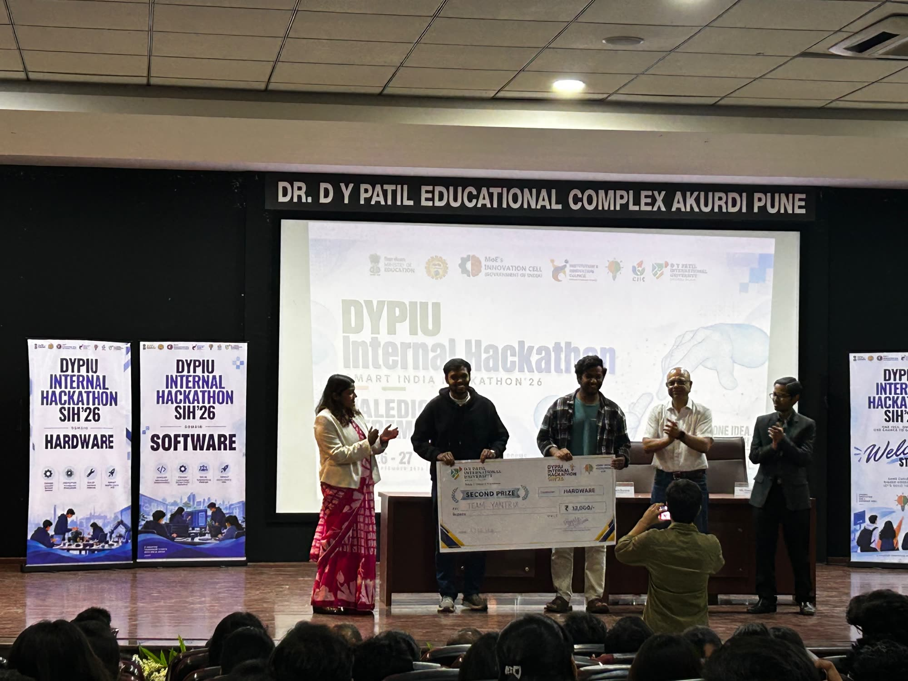
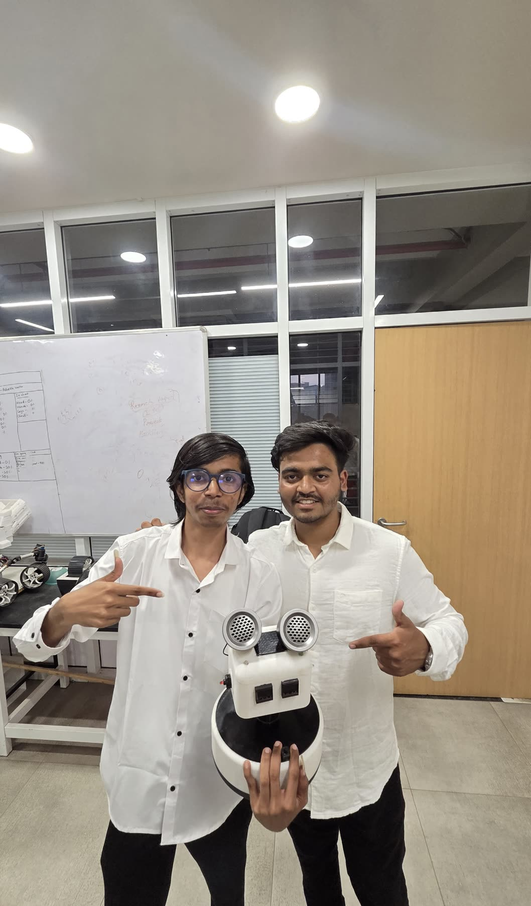

02 / Journey
The storyso far.
Milestones
Where we've been
Glimpses of past events
01 / 06

Second prize
DYPIU Internal Hackathon (SIH'26). Team Yantrix took second place in the Hardware category.

Together
The team and our mentors after the event.

On stage
Introducing Yantrix, with the badge and our robot on the table.

Our robot
Built by the club and shown in front of the Yantrix badge.

The builders
The people who built it.

Show and tell
Next up is yours. Join Yantrix →
The way we build
Five steps,no shortcuts.
Every project at Yantrix, from a line-following robot to a fixed-wing aircraft, goes through the same loop. Nobody gets it right first time — the loop is the point.
Discover
Pick a real problem and a clear goal. What should this machine do, and how will we know it did it?
Design
Sketch, model, calculate. CAD for the structure, schematics for the electronics, a plan for the software.
Prototype
Print it, cut it, solder it, flash it. A rough working version beats a perfect drawing every time.
Test
Run it, fly it, break it. Log what happened, work out why, change one thing, go again.
Demonstrate
Show it working, to the club, the campus and anyone who'll watch. Then write down what we learned for the next team.
On the bench
It starts small.
A prototype on a table, a laptop full of tabs, and one idea that might not work yet.
Off the ground
Then it leaves the lab.
Real wind, real noise, real mistakes. Testing is where a project turns into engineering.
Beyond
Then we ask how far it can go.
Robots and aircraft are how people have always reached further. We're only getting started.
Your part of the journey
Start yourshere.
Every build begins with someone deciding to show up. Apply to Yantrix and pick your first project.
Join Yantrix →